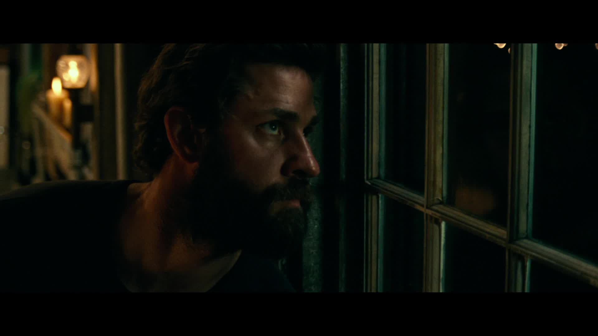

April 21, 2018 Film Review
A Quiet Place is an exploration of creating suspense with the lack of sound. The entire film feels like the quiet moment before the loud jump scare, building tension with silence. This brings a deep feeling of anxiety in the chest as the suspense grows. This feeling of anxiety is what I felt throughout most of the 95-minute runtime, and that is exactly what I look for in a horror/thriller. This sense of unease paired with a few cheap jump scares makes for an exhilarating and frightening experience.
One of the things that is obviously unique in this film is the usage of sound. The film is so quiet at many moments that a minor auditory change can be startling like going from complete silence to a loud roaring river. However, silence is not the only thing utilized; it is often used as an indicator that something is going to go wrong, which heightens the intensity. Both the usage of sound and silence is what makes this movie stand out from other post-apocalyptic horror films from recent years.
Another aspect of A Quiet Place that is executed well is the acting from the entire cast. Both Blunt and Krasinski do a solid job, but I think the performers that really stand out in the film are the child actors, particularly Millicent Simmonds (a deaf actor who plays a deaf character). The usage of American Sign Language throughout the film as the main form of communication makes for a unique experience, which is rarely seen in other movies. I also enjoyed how the film used the lack of sound during climactic moments to simulate how Regan, the deaf character, experienced her surroundings. It was a subtle detail, but it really put's the viewer in her perspective and I think that is what made her character the most compelling.
Even though A Quiet Place excels in many areas, I was left with a feeling that something was missing. I think it was the fact that the events the characters went through seemed familiar to other past horror films of a similar genre such as Signs or It Comes At Night. I also would have done a couple things differently with the way the film ended, but I do not want to spoil anything – so I won't get into that. Despite having a few minor issues, A Quiet Place is a successful horror movie that lives up to expectations. What A Quiet Place does right it nails, making it one of the best horror films I have seen in some time. I would recommend this film to anyone who is looking for a suspenseful anxiety-inducing experience.